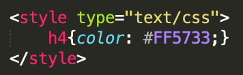
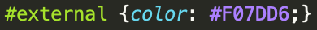

Cascading Style Sheets (CSS) is the easiest and simplest way to customize your webpage. You can change the size, color, font, or just about anything else you can think of. You can also use it to format your site, to make everything line up and look nice. We used it in countless places, and one that you can easily see is the pretty black border on the left side, which helps our gif and links line up! There are three ways to apply CSS to your webpage, we're going to show you how and when to use them.
You can use inline CSS, or putting in right in your HTML code in order to alter its propterties. This is especially useful for little changes that you will use only once.
like this
You can use internal CSS in the style section of your webpage. It normally goes at the head of your code. You might like this when you're going to want to use that style more than once, but you only have one document to use it in.
like this

Or you can make a whole different file for it with the extension .css that is just full of CSS code. That is what we opted for for the majority of our site. Since we had multiple pages and were constanly using the same ids and style, it made the most sense and made editing the style quick and easy. Just make an id for the style and call it in your HTML document.
or like this

The first images for the internal and external CSS code is our HTML code. For the internal style, we used the h4 tag to call the style. We created an id for the external CSS style, called external, and called it for the text. The CSS code is what the second pictures consists of.